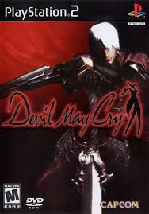
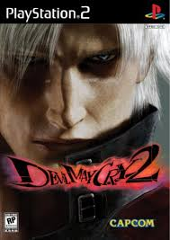
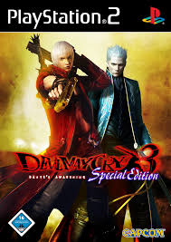
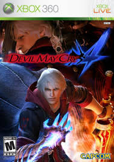
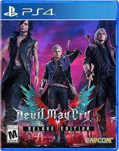

Devil May Cry
2001O primeiro jogo da franquia apresenta Dante enfrentando o poderoso demônio Mundus em uma misteriosa ilha repleta de criaturas demoníacas e desafios sobrenaturais.

Devil May Cry 2
2003Dante retorna em uma nova aventura para impedir que Arius utilize poderes demoníacos para dominar o mundo humano.

Devil May Cry 3
2005Considerado um dos melhores jogos da franquia, Devil May Cry 3 mostra o passado de Dante, o conflito com Vergil e a ascensão da torre demoníaca Temen-ni-gru.

Devil May Cry 4
2008Nero é introduzido como novo protagonista da franquia. O jogo apresenta batalhas intensas e o poderoso braço demoníaco Devil Bringer.

Devil May Cry 5
2019O mais recente título principal da franquia traz Dante, Nero e V enfrentando a ameaça de Urizen em batalhas cinematográficas e extremamente estilizadas.